▌ 意识坠入 ▌
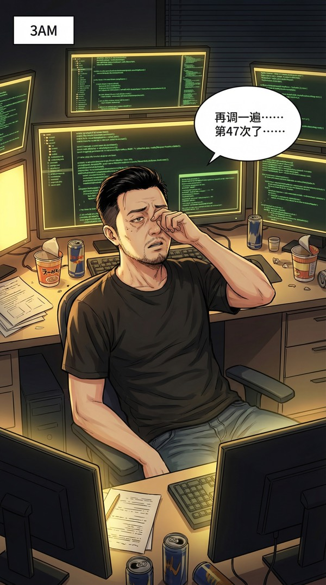
凌晨三点，第47次调试。能量饮料喝了六罐，代码在眼前游泳。
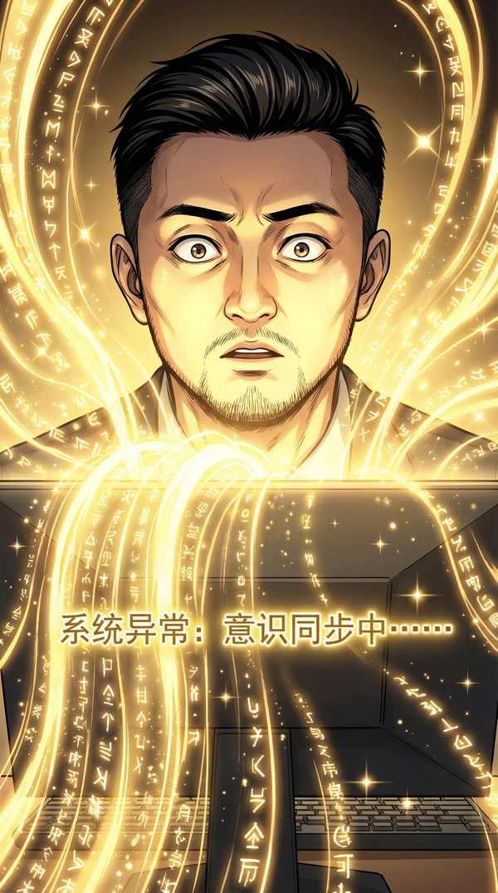
屏幕突然亮得刺眼——金色的代码像瀑布一样从显示器里涌出来。
「系统异常：意识同步中……」
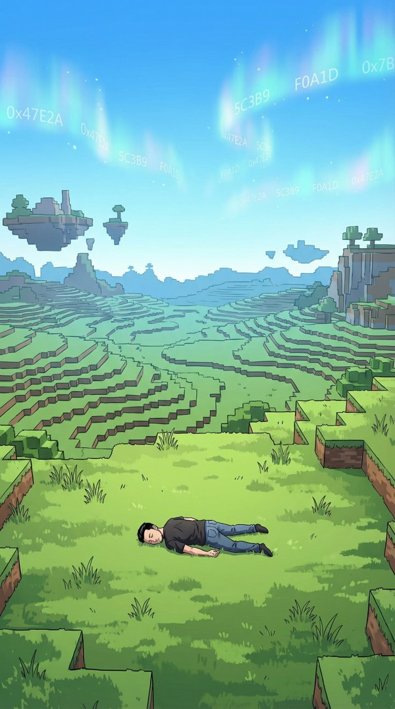
意识恢复的第一个感觉——草。脸贴着草。湿润的、带着露水味道的草。
我猛地坐起来，眼前是一片一望无际的草原。远处有浮空岛。天空中飘着……十六进制代码碎片？
▌ 发现异常 ▌
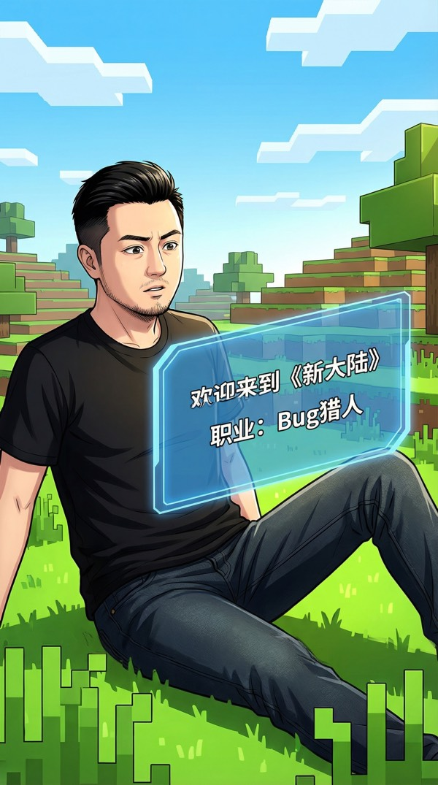
「欢迎来到《新大陆》」
「职业分配完成：Bug猎人」
战士、法师、猎人、刺客……就我是Bug猎人？这什么鬼职业？
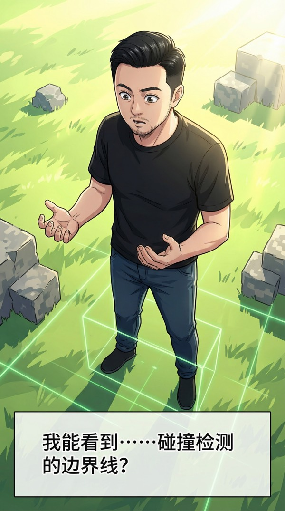
低头一看——脚下的草地上，隐隐浮现着绿色的半透明网格线。碰撞检测的边界？
只有我能看到这些。这就是所谓的"Bug猎人"视角？
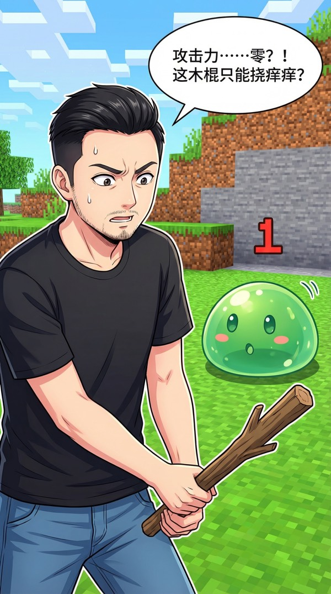
一只绿色史莱姆蹦蹦跳跳地挡在路上。我抄起一根树枝——
「造成伤害：1」
攻击力……零？！这破木棍只能挠痒痒？史莱姆看起来还挺开心的样子，弹了弹身子，好像在说"再来啊"。
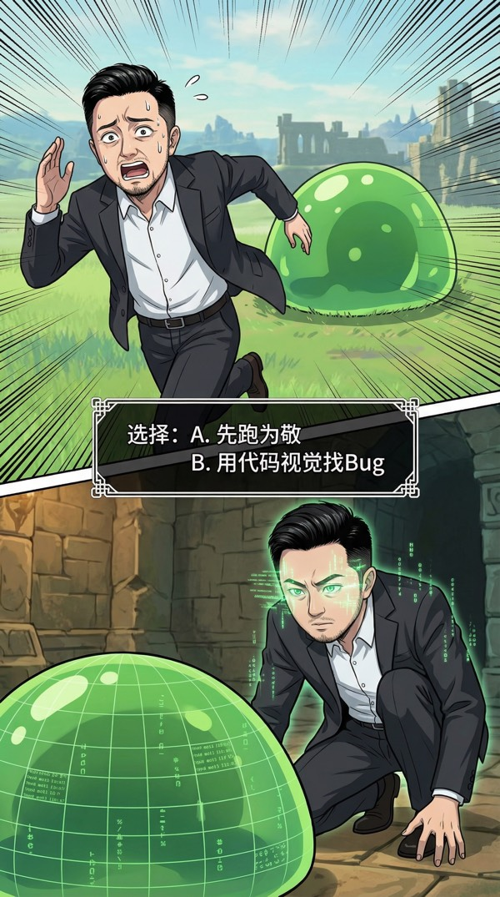
⚡ 抉择时刻
A. 先跑为敬——打不过就跑，合理！
B. 用代码视觉找Bug——十年黑客经验不是白练的
▌ 第一次 Exploit ▌
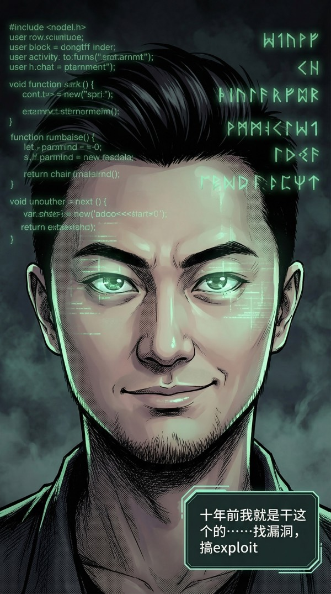
眼睛一热，视野变了。世界的表面之下，浮现出一层半透明的代码——就像X光透视，只不过看到的是程序。
十年前我就是干这个的……找漏洞，搞exploit。那时候的战场是服务器，现在换成了一个活的世界。
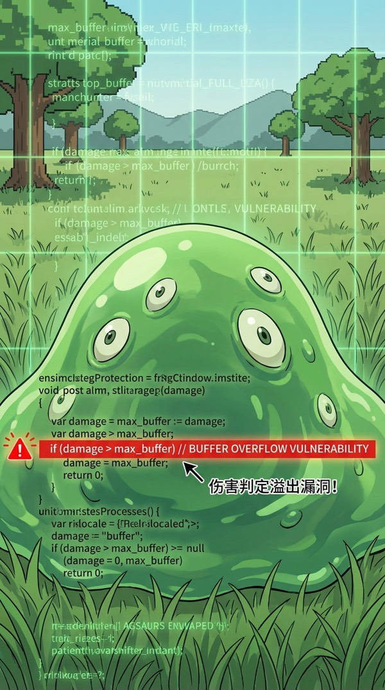
我盯着史莱姆——它的代码层里有一行红色的警告：伤害判定溢出漏洞。
经典的整数溢出。伤害计算没做上限检查。只要在正确的位置施加正确的力——
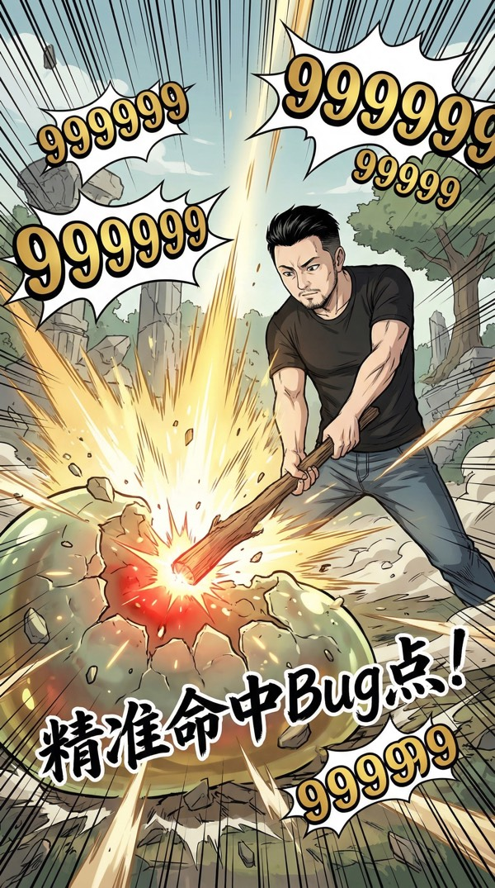
我用树枝精准地戳中了那个bug点——
999999！
史莱姆在一阵金光中炸成了碎片。漫天飞舞的绿色液滴，在阳光下还挺好看的。
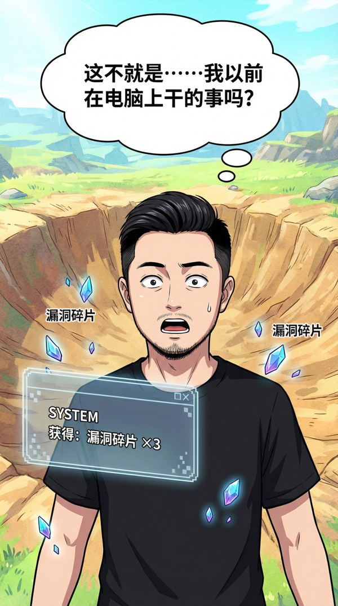
「利用Bug击杀怪物 · 获得：漏洞碎片 ×3」
有意思……不给经验值，给漏洞碎片。这个世界的规则，对Bug猎人另有一套。
说白了——这不就是我以前在电脑上干的事吗？只是以前对着黑屏白字，现在对着蓝天白云。
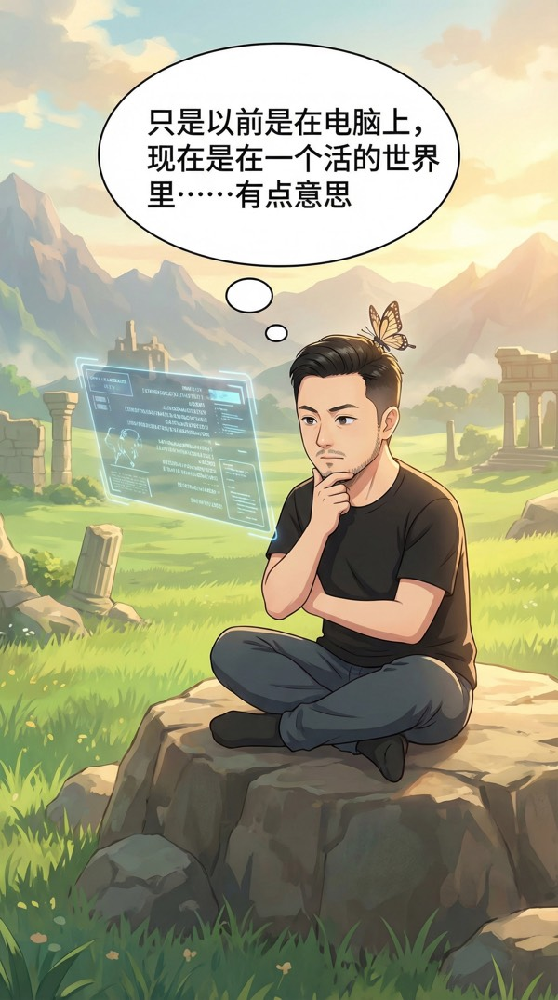
我盘腿坐在石头上，调出代码视觉，翻看刚才收集的数据。一只蝴蝶落在我头上，我都懒得赶。
这个世界的底层代码……结构很眼熟。等等，这不就是我们公司那个引擎的架构吗？
▌ 编译器 ▌
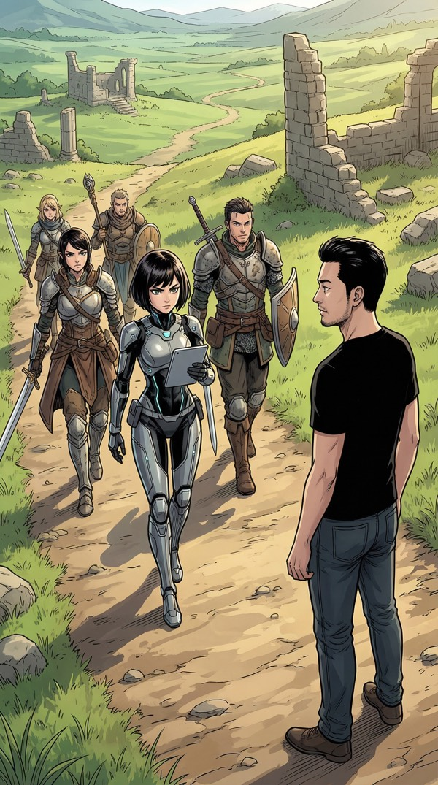
远处传来脚步声。五个人，装备精良，走路带阵型——老手。
领头的是个短发女生，穿着科技感十足的轻甲，手里拿着个类似平板的东西。眼神很锐利。
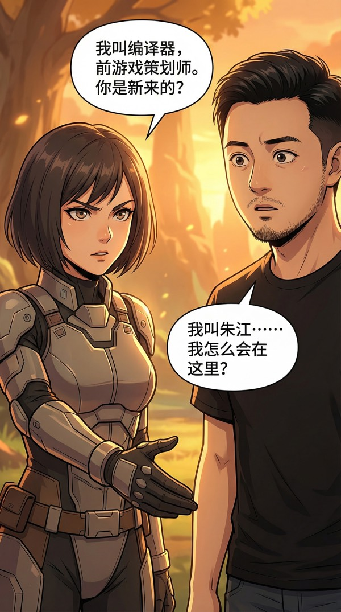
编译器："我叫编译器，前游戏策划师。你是新来的？"
朱江："朱江。AI创业公司CEO……前CEO。我怎么会在这里？"
她伸出手，我犹豫了一下，握了上去。手是温的。这个世界的触感真实得让人不安。
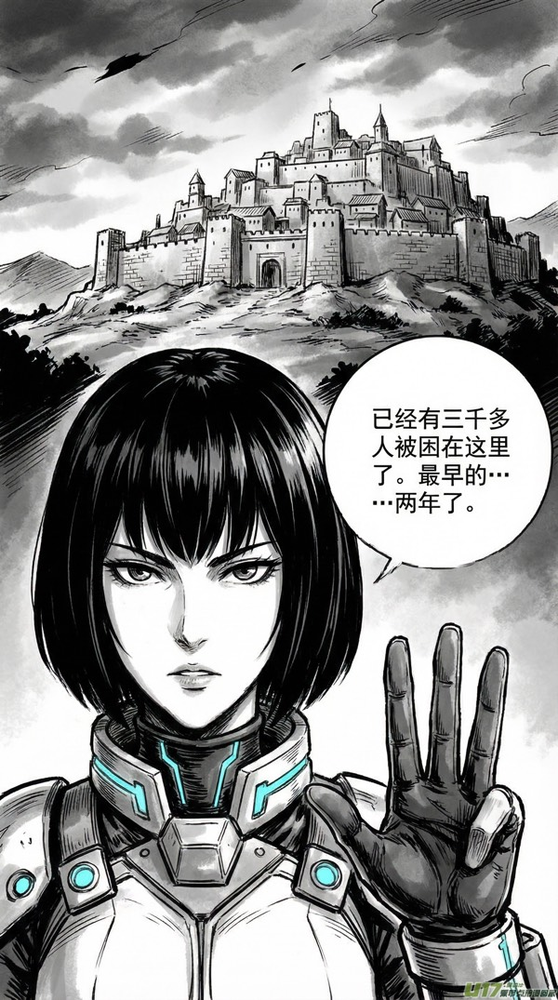
编译器："已经有三千多人被困在这里了。最早的……两年了。"
她竖起三根手指，身后远处是一座玩家建造的城镇，灯火通明。
两年？三千人？这根本不是bug，这是一场灾难。
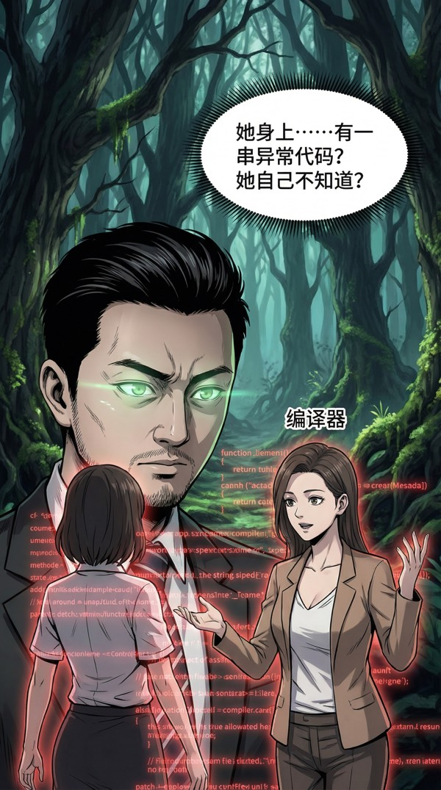
习惯性地开了代码视觉——然后我愣住了。
编译器身上，有一串异常代码。不是普通的角色属性代码，是某种……嵌入式的隐藏标记。
她自己完全不知道。而其他队员身上没有。
这意味着什么？
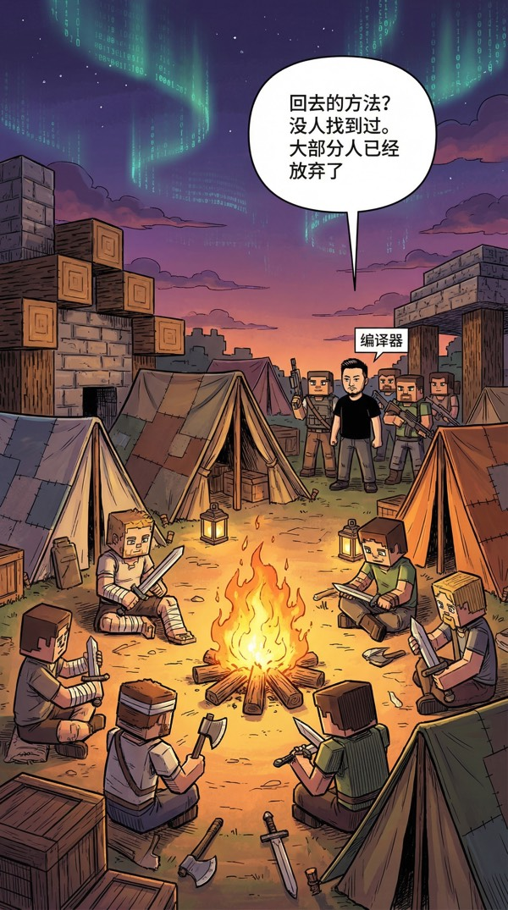
编译器："回去的方法？没人找到过。大部分人已经放弃了，在这里建立了新生活。"
营地里篝火噼啪作响，有人磨刀，有人包扎伤口。天边泛着淡淡的代码极光。
放弃？我朱江的字典里没这两个字。
▌ 王座 ▌
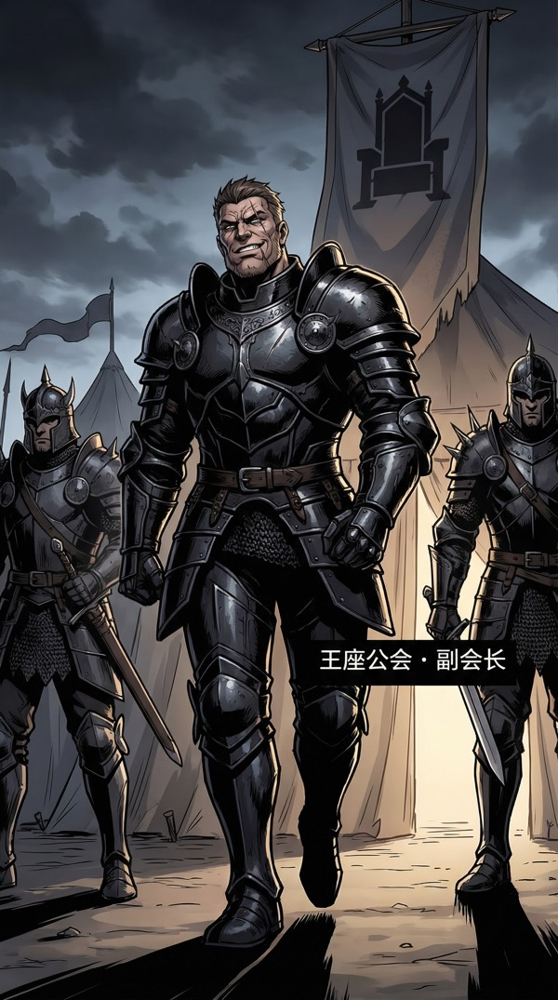
营地另一边突然喧哗起来。一个穿着黑色重甲的壮汉大步走来，身后跟着两个持刀护卫。下巴上一道刀疤，眼神傲慢。
他胸甲上的标志：一个王冠。王座公会 · 副会长。
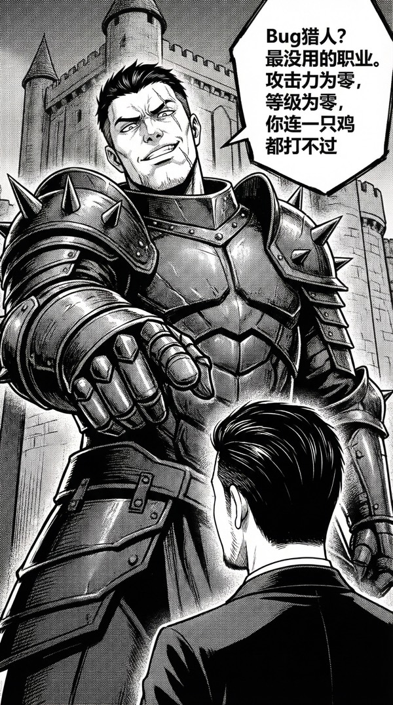
王座副会长："Bug猎人？哈！最没用的职业。攻击力为零，等级为零，你连一只鸡都打不过。"
他的手下哄笑起来。编译器皱了皱眉，但没说话。
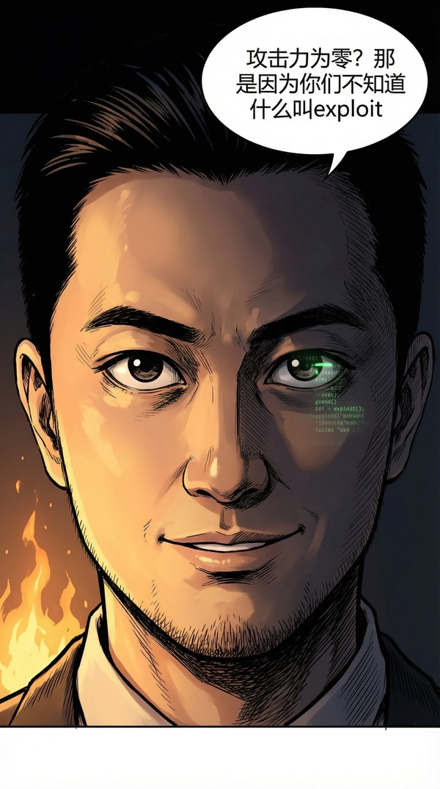
我没生气。
准确地说——我笑了。
攻击力为零？那是因为你们不知道什么叫exploit。
这种眼神我太熟悉了。十年前，也有人嘲笑我写的代码"太野路子"。后来那些人都在给我的公司投简历。
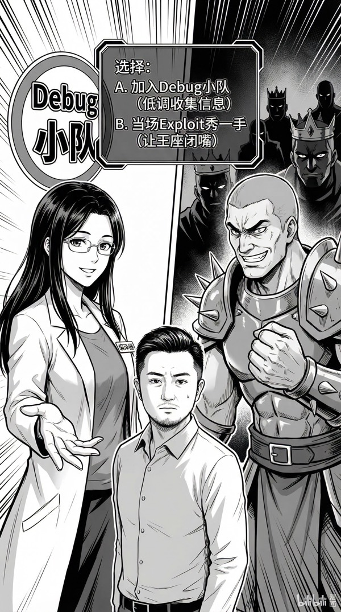
⚡ 抉择时刻
A. 加入Debug小队——低调收集信息，稳扎稳打
B. 当场Exploit秀一手——让王座闭嘴，霸气立威
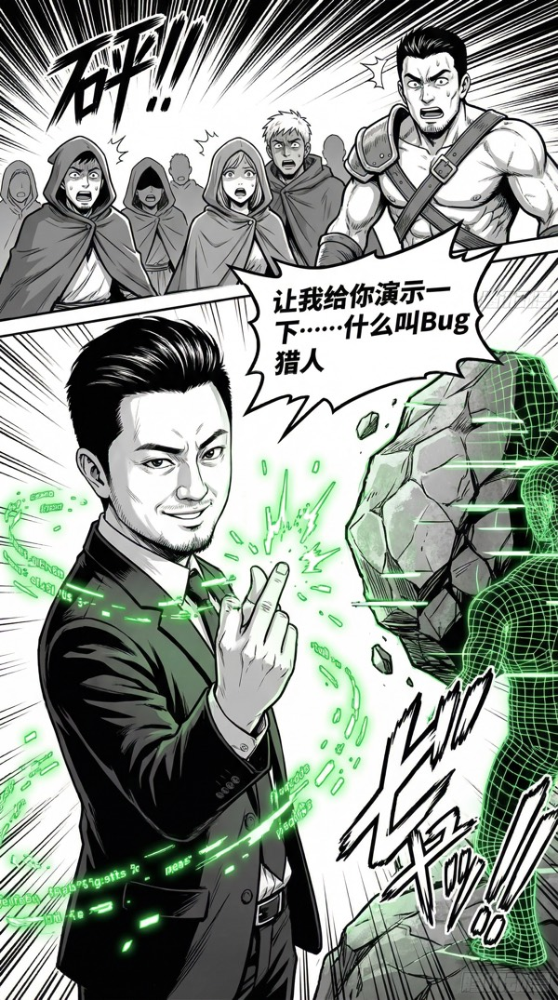
朱江："让我给你演示一下……什么叫Bug猎人。"
我轻轻打了个响指。代码碎片在周围凭空浮现，像绿色的萤火虫。旁边一块巨石突然开始闪烁——在实体和线框之间来回切换。
所有人都愣住了。王座副会长脸上的笑容凝固了。
▌ FATAL ERROR ▌
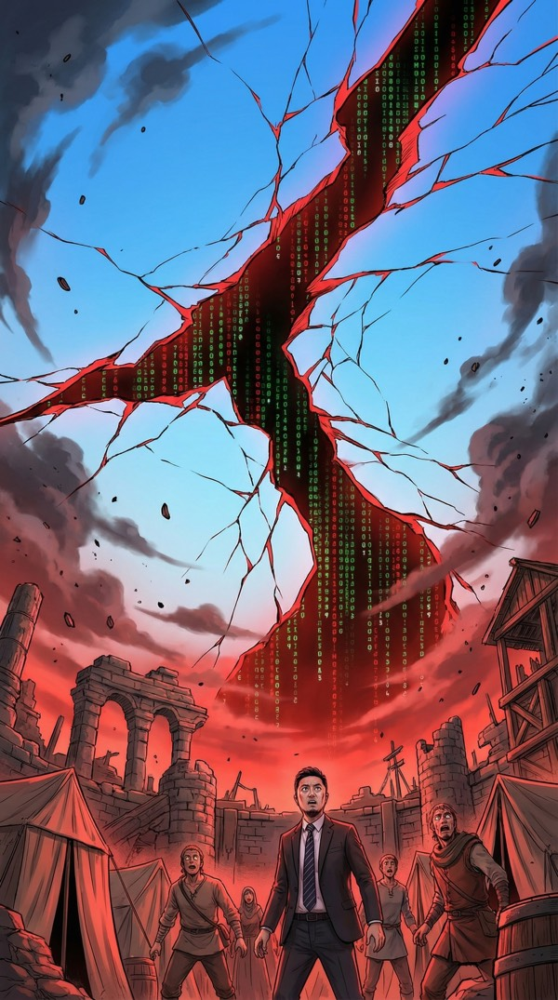
就在这时——天空裂了。
一道巨大的红色裂缝撕开天穹，像是有人用刀划破了世界的幕布。裂缝后面，是密密麻麻的、疯狂滚动的源代码。
所有人都抬头看着，恐惧写在每个人脸上。
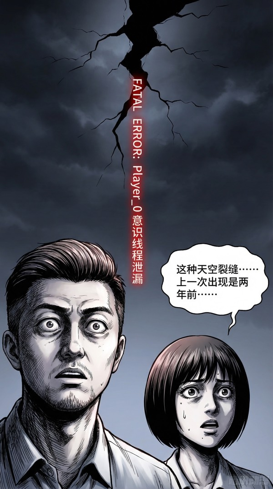
FATAL ERROR: Player_0 意识线程泄漏
编译器："这种天空裂缝……上一次出现，是两年前。就是第一批人被困住的那天。"
她的声音在发抖。
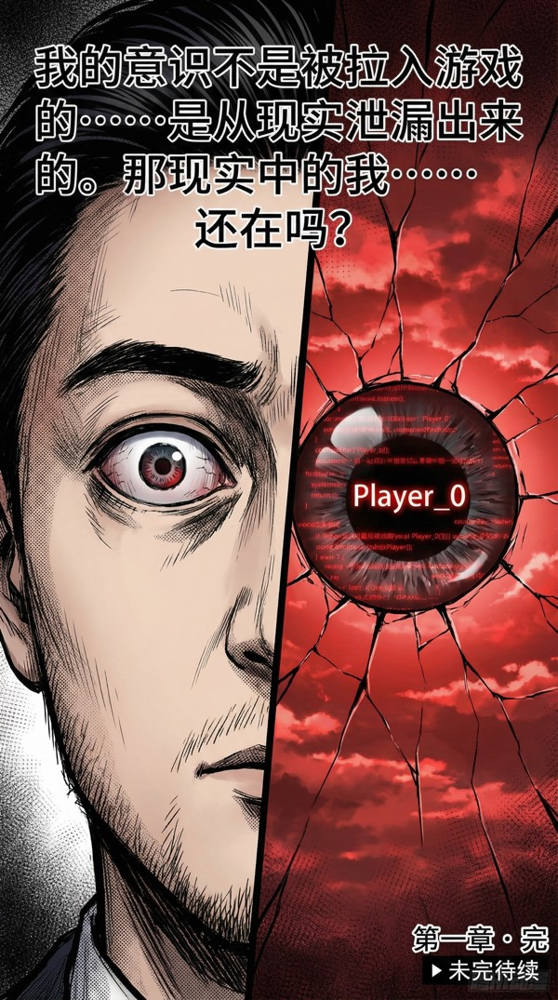
Player_0——那是我的玩家ID。
我的意识不是被"拉入"游戏的。
是从现实世界泄漏出来的。
那现实中的我……还在吗？